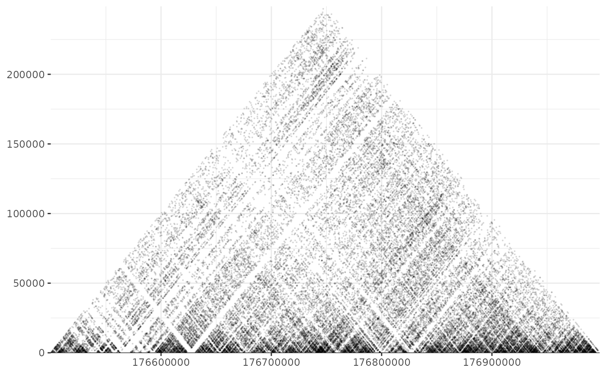

shaman_gplot_map
shaman_gplot_map(
points,
interval_range = NA,
rotate = TRUE,
point_size = 0.1,
add_axis = TRUE
)A dataframe containing the points (start1, start2).
Data frame with the start and end of the range to plot. If NA, the range of start1 in points.
Binary flag, indicating if the plot should be rotated by 45 degrees.
Cex size of the points in the plot.
Binary flag, indicating if axis should be added to plot.
A ggplot object with the map.
Plots hic contact matrix.
# Set misha db to test
library(misha)
gsetroot(shaman_get_test_track_db())
points <- gextract("hic_obs", gintervals.2d(2, 176.5e06, 177e06, 2, 176.5e06, 177e06))
shaman_gplot_map(points)
